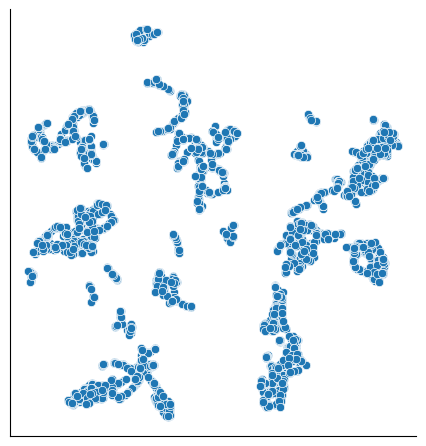
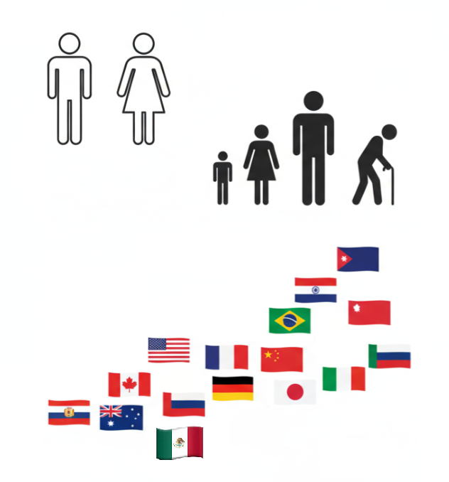
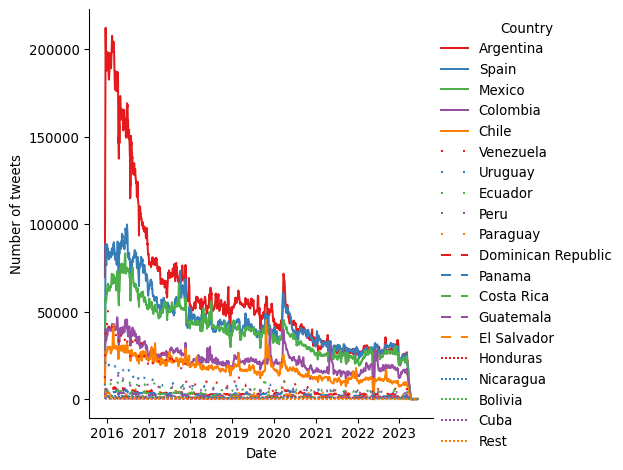
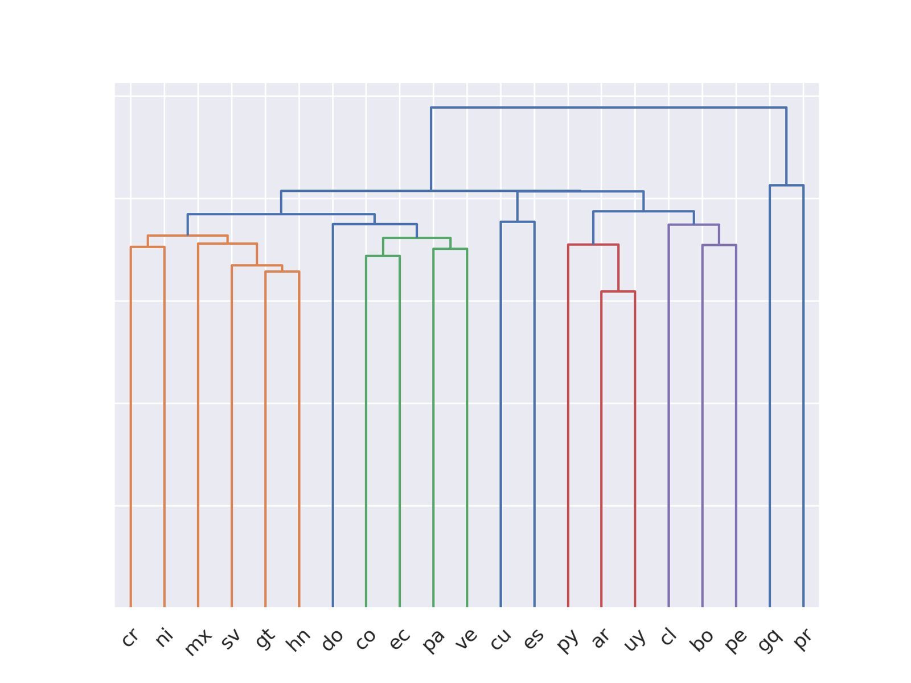
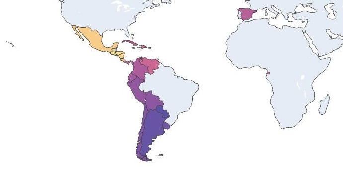

El Procesamiento de Lenguaje Natural en la Ciencia de Datos
INFOTEC
INGEOTEC

GitHub: https://github.com/INGEOTEC
WebPage: https://ingeotec.github.io/
Aguascalientes, México

INFOTEC
Centro de Investigación del Gobierno Federal, que contribuye a la Transformación Digital de México, a través de la investigación, la innovación, la formación académica y el desarrollo de productos y servicios TIC. Sus alcances abarcan al sector público y privado, habilitando caminos que conduzcan hacia un México moderno y de inclusión digital.
Introducción
Definiciones
Inteligencia Artificial (IA)
Conjunto de teorías, métodos y algoritmos para el desarrollo y estudio de sistemas que presentan un comportamiento que sería identificado como inteligente.
Aprendizaje Computacional
Subárea de IA que estudia el desarrollo e implementación de algoritmos capaces de aprender de datos de manera autónoma sin haber sido explícitamente programados.
Procesamiento de Lenguaje Natural
Conjunto de teorías, métodos y algoritmos para el desarrollo y estudio de sistemas que permitan el entendimiento, generación y manipulación del lenguaje humano.
Ciencia de Datos
Campo interdisciplinario que combina matemáticas, estadística, IA, ciencias computacionales, entre otras para obtener conocimiento atraves de los datos.
Percepción de Inteligencia Artificial (IA)
Así la vemos
Así está
Aprendizaje computacional
Aprendizaje computacional
Tipos de aprendizaje computacional
- Aprendizaje no supervisado
- Aprendizaje supervisado
- Aprendizaje por refuerzo
Aprendizaje no supervisado

Aprendizaje por refuerzo
- Juegos
- Actividades
- Retroalimentación al final
Aprendizaje supervisado
Clasificador lineal
Aplicaciones de Procesamiento de Lenguaje Natural
Aplicaciones de PLN (1/2)
Aplicaciones
- Minería de opinión
- positivo :) –neutro :| –negativo :(
- Análisis de tópicos
- Carga emotiva de un mensaje: enojo, anticipación, disgusto, miedo, gozo, tristeza, sorpresa, confianza.
- Identificación de humor
- Identificación de lenguaje de odio
Aplicaciones de PLN (2/2)
Aplicaciones
- Predicción indicadores socio-demográficos de usuarios de redes, e.g., edad, sexo, lugar de procedencia, ocupación
- Identificación de autoría: ¿quiénes escriben?, ¿cómo escriben?, ¿sobre qué escriben?
- Entender como se comportan usuarios, ¿qué desean?, ¿por qué?
- Medición de discurso de odio en redes sociales, e.g., xenofobia, racismo, misoginia, cyberbulling.
- Identificación de posibles trastornos mentales, e.g., ansiedad, depresión, adicciones.
- Aplicaciones a seguridad, salud, políticas públicas, economía y finanzas.
Algunos retos
Retos
- Escritos informales: muchos errores, onomatopeya, importación de términos, variaciones regionales, emojis, entre muchos otros.
- Contextos cortos, conocimiento del mundo.
- Negación, sarcasmo, ironía, humor.
- Semántica.
- Recursos lingüísticos reducidos para lenguajes diferentes del inglés.
- Multimedios.
Clasificación de Textos
Clasificación de Textos
Definición
El objetivo es la clasificación de documentos en un número fijo de categorías predefinidas.
Polaridad
El día de mañana no podré ir con ustedes a la librería
Negativa
Tareas de Clasificación de Textos
Polaridad
Positiva, Negativa, Neutral
Emoción (Multiclase)
- Ira, Alegría, …
- Intensidad de una emoción
Evento (Binaria)
- Violento
- Delito
Perfilado de autores
Género
Hombre, Mujer, No binario, …
Edad
Niño, Adolescente, Adulto
Variedad de Lenguaje
- Español: España, Cuba, Argentina, México, …
- Inglés: Estados Unidos, Inglaterra, …

Modelado medianate bolsa de palabras
Representación de Texto
Bolsa de palabras
- Asociar cada palabra a un identificador.
- de \(\rightarrow\) 1.
- que \(\rightarrow\) 2.
- buenos \(\rightarrow\) 216.
- dias \(\rightarrow\) 101.
buenos días
\((216, 101)\)
La bolsa no tiene orden
\((101, 216)\)
Modelo lineal
\(y = \sigma( \sum_{i \in (100, 215)} w_i x_i + w_0)\)
Parámetros
\(x_i\) TFIDF / \(w_i\) valor estimado
Representación de Texto (2)
Bolsa de Palabras / Limitantes
- No existe similitud entre palabras.
- Se pierde el orden.
- Vector disperso.
Embeddings estáticos
- Hipótesis distribucional.
- Similitud entre palabras.
- Vector denso.
Embeddings estáticos / limitantes
- Se pierde el orden.
- Independientes del contexto.
Dialect Identification (DialectId)
Datos
Datos georeferenciados en español

¿Qué se puede hacer con los datos?
- Muchos textos
- Cada texto asociado a un pais
Problema
- Clasificación de texto
DialectId
¿Qué es?
DialectId es un clasificador de texto basado en una representación de Bolsa de Palabras (BoW, por sus siglas en inglés, Bag of Words), utilizando SVM lineal como clasificador.
Procesamiento de normalización
- Caracteres en minúsculas
- Eliminar lo diacríticos
- Remplazar nombres de usuario por “_usr”
- Remplazar URLs por “_url”
Conjunto entrenamiento
Los tokens y sus pesos fueron estimados usando un conjunto de entrenamiento de cada idioma (medio millón por pais).
DialectId (1/2)
Modelado por bolsa de palabras
- Cada texto es un vector en \(R^{v}\)
- Modelo lineal
- mexico = \(\textsf{sign}(\sum_i^v w_i x_i + w_0)\)
- \(\mathbf w=(w_1, w_2, \ldots, w_v)\)
Dendograma

Similutud entre países hispanohablantes
Mapa

Conclusiones
Temas
Técnicas
- Inteligencia artificial
- Aprendizaje computacional
- Procesamiento de lenguaje natural
Tareas
- Clasificación de texto
- Identificación de dialectos